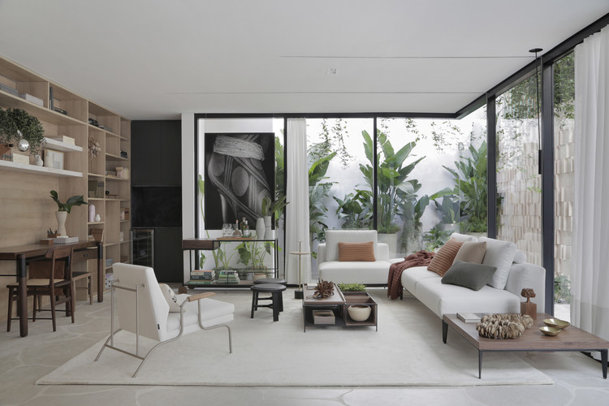
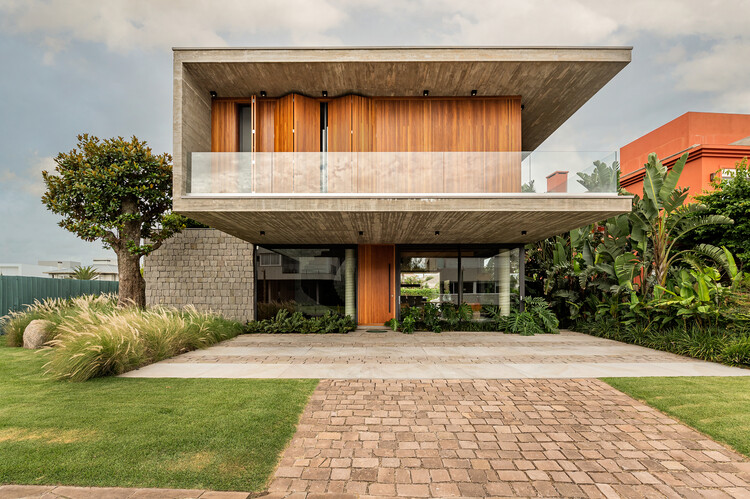

Eu me chamo Nicolly Tonon de Olivera, tenho 23 anos, sou formada em Arquitetura e Urbanismo pela Faculdade Guarapuava em 2023, atualmente moro em Turvo-PR e trabalho no escritorio de Arquitetura Zanetti.
Na Zanetti, acreditamos que a arquitetura vai além da criação de espaços; trata-se de transformar ideias em ambientes funcionais e inspiradores que refletem a personalidade e as necessidades de cada cliente. Nossa proposta é combinar criatividade, inovação e sustentabilidade para desenvolver projetos únicos, que promovam bem-estar e qualidade de vida. Com uma equipe de profissionais experientes e apaixonados, buscamos sempre superar as expectativas, oferecendo soluções arquitetônicas personalizadas que valorizam cada detalhe e tornam cada projeto uma verdadeira obra de arte.